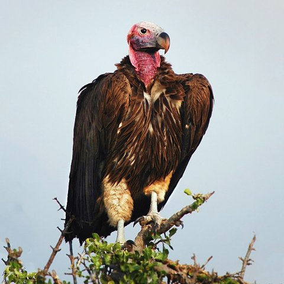

АФРИКАНСЬКИЙ ГРИФ

Розповсюдження
Цей вид частково поширений у більшій частині Африки та на Аравійському півострові, хоча він відсутній у більшій частині центральної та західної частин континенту та скорочується в інших місцях свого ареалу. Африканські грифи гніздяться в Сенегалі, Малі, Мавританії, Буркіна-Фасо, Нігері, Чаді, Судані, Єгипті, Ефіопії, Сомалі, Кенії, Танзанії, Уганді, Руанді, Демократичній Республіці Конго, Замбії, Малаві, Мозамбіку, Есватіні, Південна Африка, Зімбабве, Ботсвана та Намібії. На Аравійському півострові вони гніздяться в Ємені, Омані, Об'єднаних Арабських Еміратах і Саудівській Аравії. Також присутні у Гамбії, Гвінеї, Кот-д'Івуарі, Беніні, Центральноафриканській Республіці та Анголі, а також одного разу бродячий птах був зареєстрований у Кувейті.
Середовище проживання
Африканський гриф в порівнянні з африканськими і плямистими сипами
Африканський гриф мешкає в сухих саванах, чагарникових заростях, в напівпустелях і пустелях, в заростях дерев у ваді, на відкритих гірських схилах. Зазвичай вони зустрічаються на відкритій місцевості, місцями порослій деревами і, очевидно, віддають перевагу місцевостям із мінімальним трав’яним покривом. Під час пошуку їжі вони можуть потрапити в більш густі місця існування і навіть у населені людиною території, особливо якщо їх приваблює падлина на дорозі. Їх можна знайти на висоті до 4500 м над рівнем моря.
Опис
Африканський гриф — це великий птах, який вважається найбільший і найбільш довгокрилим грифом в межах свого ареалуі, поступаючись близькоспорідненому чорному грифу, хоча деякі сипи, особливо капські сипи і білоголові сипи, мають більшу вагу. Довжина птаха становить 95-115 см, з розмахом крил становить 2,5–2,9 м. Довжина крила становить 71,5–82,5 см, хвоста 33–36 см, цвіки 12,2–15 см. Дзьоб довжиною 10 см і шириною 5 см вважається одним з найбільших серед усіх яструбових, однак довжина нижньої частини дзьоба становить 7,2 см, і є трохи меншою за довжину нижньої частини дзьоба чорного грифа. Представники підвиду T. t. tracheliotus важать від 4,4 до 9,4 кг, а мешкаці Східної Африки — в середньому лише 6,2 кг. Представники підвиду T. t. negevensis є більшими, самці цього підвиду важать 6,5–9,2 кг, а самиці 10,5–13,6 кг.
Загалом верхня частина тіла у африканських грифів чорнувата, стегна контрастно білі. Чорне пір'я на спині африканських грифів мають коричневі краї, а у представників аравійського підвиду верхня частина тіла темно-коричнева. Як і у багатьох грифів, голова лиса. Забарвлення голови може варіюватися від червонуватого в Південній Африці до тьмяно-рожевого у Північній Африці до рожевого на потилиці та сірого спереду на Аравійському півострові. Характерне поєднання барвистої голови та м'ясистих складок з боків. Лиса голова є перевагою для африканського грифа, оскільки пера на ній при їжі могли б забризкатися кров'ю та іншими рідинами, і тому її було б важко підтримувати в чистоті. Під час польоту африканські грифи мають великі широкі крила, розташовані паралельно передніми краями, і злегка загострені, зубчасті кінці крил. Африканські грифи є схожими на бурих стерв'ятників, але вони мають значно більші і масивніші дзьоби, і їх можна сплутати лише на великій відстані. Сипи, як правило, набагато блідіші, з меншою білою плямою на крилах і більшпомітними вторинними маховими перами. Чорний гриф (ареал якого може збігатися в аравійській зоні) має подібну форму тіла, але повністю темний, без контрастного оперення.
Поведінка
Африканський гриф — це птах-падальщик, який харчується здебільшого трупами тварин, які шукає очима на землі або спостерігаючи за іншими падальниками. Більшість африканських грифів часто самі знаходять падаль і починають роздирати шкіру. Є найпотужнішими та найагресивнішими з африканських падальників, і інші грифи, як правило, поступаються тушею африканському грифу, якщо той прилітає до туші. Це часто вигідно менш сильним грифам, тому що африканський гриф може проривати міцну шкіру та вузлуваті м'язи великих ссавців, через які інші не можуть проникнути. Однак гієни в цьому відношенні ще ефективніші (так як вони більш ненажерливі). Однак стерв'ятники часто перебувають по краях натовпу біля великих туш, чекаючи, поки інші грифи закінчать їсти, щоб харчуватися залишками шкіри, сухожиль та інших грубих тканин, які інші не з'їдять. Велику дичину, розміром до слона, віддають перевагу падлу, оскільки вони забезпечують найбільше прожитку за один раз. За один раз гриф може з'їсти до 1,5 кг м'яса.
НАЗАД ДО МЕНЮ
НАЗАД ДО БЕРКУТА
ПЕРЕЙТИ ДО У РОЗРОБЦІ